強化工具箱、檢測器、程式碼速記本
Firefox 32 現已進入曙光版 (Aurora) 釋放頻道，先看看此版本的開發者工具發生哪些重要變動。
首先必須感謝此版本開發者工具的 41 位貢獻者。另可參閱 Firefox 32 開發者工具的錯誤修正清單。
工具箱 (Toolbox)
我們先從目前處於測試階段的「UserVoice feedback channel」新平台，其上所提及的數項功能開始。
Box model 的資訊列現可一併顯示節點尺寸。就如同其他工具所帶來的方便性，現在開發者能直接從資訊列上輕鬆得知該節點的尺寸。(可參閱開發討論記錄與他人在 UserVoice 上提出的需求)
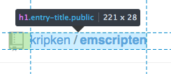
「挑選頁面中的元素 (Pick an element from the page)」按鈕現在更靠近檢測器 (Inspector) 分頁，能更快切換此兩項功能。而且現在也能透過「Ctrl+Shift+C」或「Cmd+Opt+C」快捷鍵達到相同效果。(可參閱開發討論記錄與他人在 UserVoice 上提出的需求)
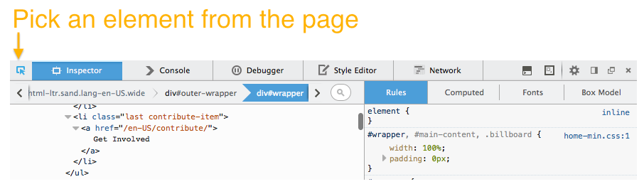
現在提供「完整頁面擷圖 (Full page screenshot)」按鈕。在啟用並按下此按鈕之後，就會將擷圖傳送到你設定的下載資料夾中。(可參閱開發討論記錄)
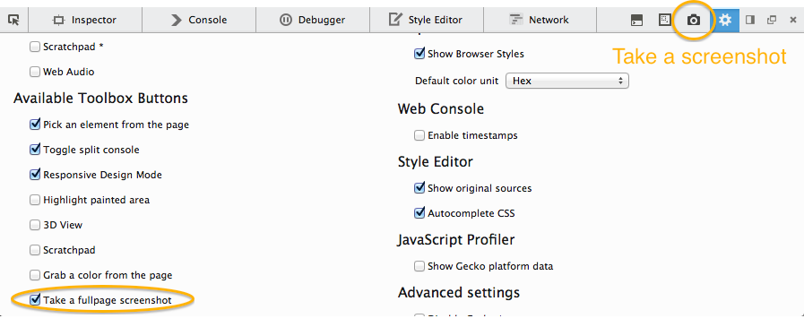
下方 gif 動畫即展現該擷圖功能：
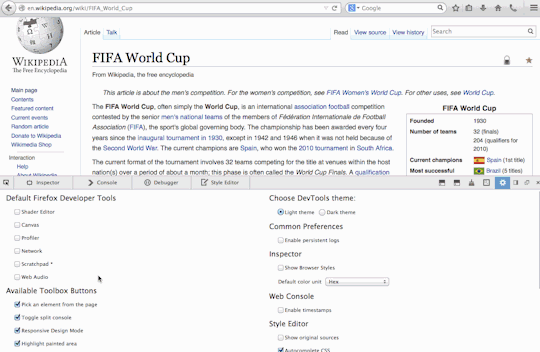
開發者工具的使用者介面 (UI) 現已套用新的圖像，可支援高像素螢幕的顯示功能 (HiDPI)，讓 UI 能在這些裝置上更清晰。特別感謝 Tim Nguyen 的努力成果！(可參閱開發討論記錄)
Web Audio 編輯器 (Editor)
除了「著色器編輯器 (Shader Editor)」與「Canvas 除錯器 (Canvas Debugger)」之外，新的媒體工具「Web Audio 編輯器 (Web Audio Editor)」也從 Firefox 32 開始加入強大的工具行列了。在選項面板中啟動此功能之後，即可檢測 AudioContext 圖形並修改 AudioNodes 的屬性。另可參閱本篇 Hacks 文章以進一步了解。
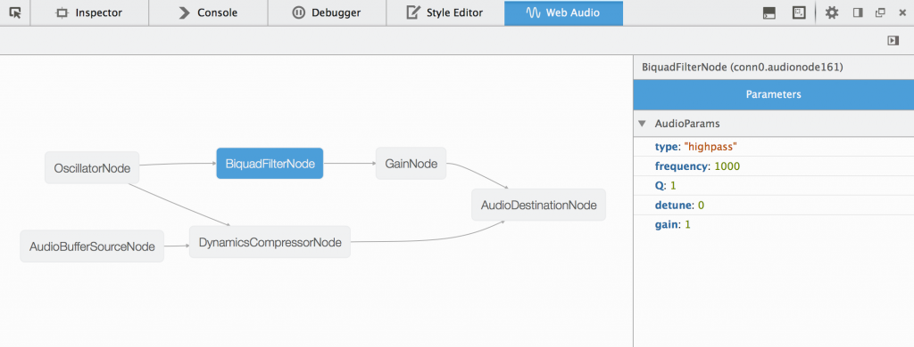
檢測器 (Inspector)
檢測器現可顯示瀏覽器預設樣式 (User agent style)。由於這些預設樣式均可能影響你的網頁樣式，因此能方便開發者進行檢視。同樣可透過選項面板啟動此功能，另可參閱MDN 上的說明文件以進一步了解。(可參閱開發討論記錄與他人在 UserVoice 上提出的需求)
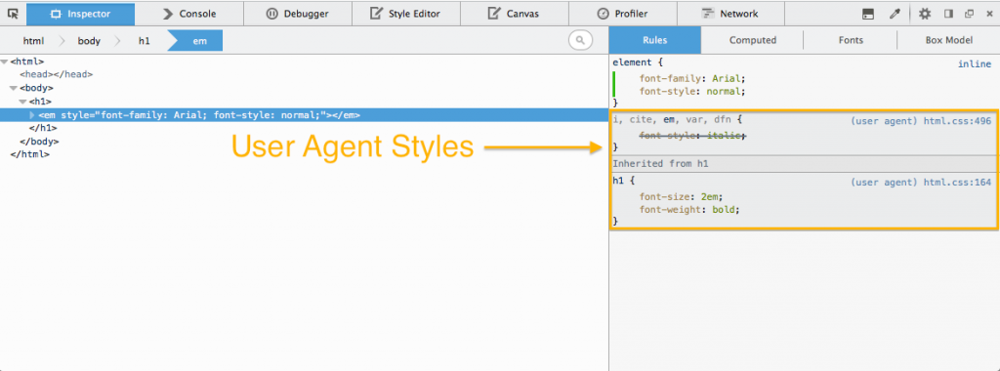
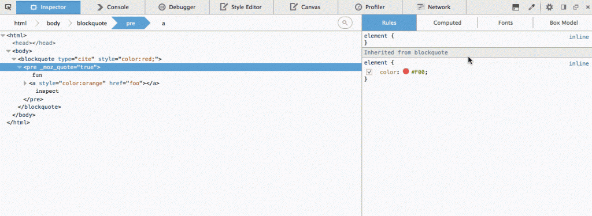
針對隱藏節點與可見節點，標記檢視 (Markup view) 模式的顯示方式將有所區別。(可參閱開發討論記錄與他人在 UserVoice 上提出的需求)
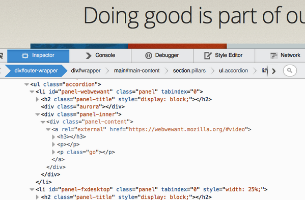
字型檢測器中的提示文字，現可供預覽網路字型。只要將滑鼠游標停在字型堆疊之上，即可在提示文字中看到目前套用的字型 (包含任何網路字型)。(可參閱開發討論記錄)
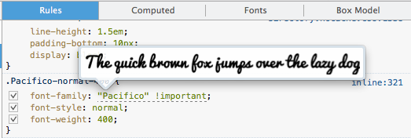
標記檢視模式現另針對節點，在右鍵選單中提供「貼上外部 HTML (Paste Outer HTML)」選項。(可參閱開發討論記錄與他人在 UserVoice 上提出的需求)
程式碼速記本 (Scratchpad)
程式碼速記本現針對 JavaScript，提供型別推斷 (Type-inference) 架構的程式碼自動補完 (Code completion) 功能。按下「Ctrl+Space」即可在目前的游標位置上開啟建議清單，另按下「Shift+Space」就會出現目前的型別資訊。我們目前透過「Tern」程式碼分析引擎提供此功能。(可參閱開發討論記錄)
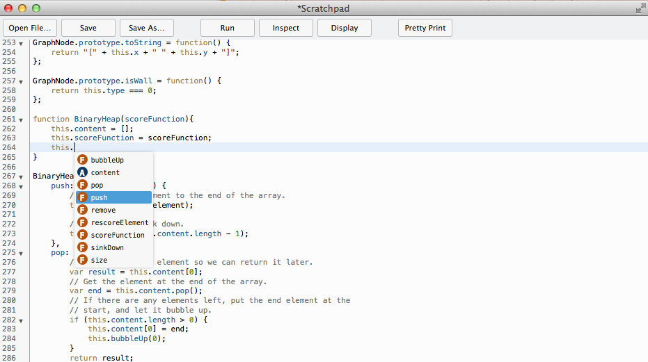
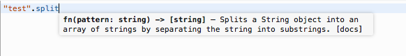
你有任何問題或意見、想提報錯誤，或想建議任何功能嗎？同樣可到 UserVoice 提出自己的想法或投票選擇，亦可透過 Twitter 上的@FirefoxDevTools聯絡我們。
原文連結：Toolbox, Inspector & Scratchpad improvements – Firefox Developer Tools Episode 32